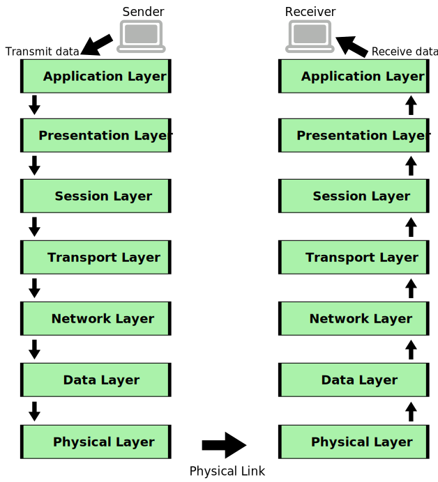

Basics of Computer Networks
- Definition : A computer network is a set of interconnected computers and other devices that are
linked together to share resources, data, and information. The connections can be wired or wireless and
enable communication and collaboration between the connected devices.
Goals of Computer Network:
- Resource Sharing: Networks allow multiple users to share hardware, software, and data
resources,
reducing costs and increasing efficiency.
- Communication: Networks facilitate data exchange and communication between users,
applications,
and
devices.
- Collaboration: Networks enable users to work together on shared projects and documents,
promoting
teamwork and productivity.
- Data Transfer: Networks provide a means to transfer data and information between devices
quickly
and
efficiently.
Applications of Computer Network:
- File Sharing: Networks enable users to access and share files and documents over shared
drives or
cloud-based storage.
- Communication: Networks support email, instant messaging, video conferencing, and other
communication applications.
- Internet Access: Networks provide connectivity to the internet, allowing users to browse the
web
and
access online services.
- Printing: Networked printers enable multiple users to print from their devices to a
centralized
printer.
- Remote Access: Networks allow users to remotely access resources and systems from different
locations.
- Online Gaming: Networks facilitate multiplayer gaming experiences over the internet.
- E-commerce: Networks support online shopping and electronic transactions.
Components of a Computer Network:
- Nodes: Devices such as computers, servers, printers, routers, and switches that are part of
the
network.
- Links: Physical or wireless connections that allow data transmission between nodes.
- Network Interface Card (NIC): Hardware that enables a device to connect to the network and
communicate using network protocols.
- Switches: Devices that connect multiple nodes in a local network and facilitate data
forwarding.
- Routers: Devices that connect multiple networks and enable data routing between them.
- Cables and Transmission Media: Physical medium used to carry data signals between devices
(e.g.,
twisted-pair cables, fiber-optic cables).
- Protocols: Rules and conventions that govern data transmission and communication within the
network.
Topology and Types:
- Topology: The physical or logical arrangement of nodes and links in a network.
- Bus Topology: All devices are connected to a single cable (main bus).
- Star Topology: All devices are connected to a central hub or switch.
- Ring Topology: Devices are connected in a closed loop.
- Mesh Topology: Devices are connected to each other in a point-to-point manner.
Connecting Networks: Broadcast and Point-to-Point
After understanding topologies, we delve into different types of network connections.
Broadcast Network
In a broadcast network, all devices share the same communication medium and can send their messages
to all other devices on the network. It's like broadcasting a message to everyone.
- Efficient for broadcasting information to all devices simultaneously.
- Prone to congestion as all devices compete for the same channel.
- Security concerns arise as all devices receive all messages.
Point-to-Point Network
In a point-to-point network, devices have dedicated communication links. This type of connection is
often seen in a more traditional client-server architecture.
- Offers direct, dedicated communication between devices.
- Enhanced security since only intended recipients receive messages.
- Requires more connections as the network expands.
- Less efficient for broadcasting messages to all devices.
Understanding network topologies aids in deciding which connection type is suitable for different
scenarios.
Types of Networks:
Types of Networks
- LAN (Local Area Network): A network confined to a small geographical area like
a single building or campus.
- MAN (Metropolitan Area Network): A larger network that spans across a city or
metropolitan area.
- WAN (Wide Area Network): Covers larger distances, often connecting multiple
cities or countries.
- Internet: A global network of networks that enables worldwide communication and
access to information.
LAN (Local Area Network)
Advantages:
- High data transfer rates, suitable for resource-intensive applications.
- Low implementation cost as it covers a limited area.
- Easy to manage and troubleshoot due to smaller scale.
Disadvantages:
- Limited coverage area, not suitable for connecting distant locations.
- Expensive to expand beyond its initial range.
MAN (Metropolitan Area Network)
Advantages:
- Larger coverage area than LAN.
- Offers higher data rates than WAN.
Disadvantages:
- Installation and maintenance costs.
- Not as widely available as LANs.
WAN (Wide Area Network)
Advantages:
- Global coverage, connects remote locations.
- Facilitates data sharing over long distances.
Disadvantages:
- Higher costs due to long-distance infrastructure.
- Slower data transfer rates compared to LAN.
Internet
Advantages:
- Unlimited access to information and resources.
- Global communication and collaboration.
Disadvantages:
- Security and privacy concerns.
- Potential for misinformation and cyber threats.
Differences Between Network Types
Data Transmission Modes
Data transmission modes define how data is sent between devices in a network.
Understanding Data Transmission Modes
Having learned about network topologies, we now explore the different ways data is transmitted
between devices.
Serial Transmission
Data bits sent one after another over a single line.
- Slower data transfer compared to parallel transmission.
- Requires fewer wires, suitable for long distances.
Parallel Transmission
Multiple data bits sent simultaneously using separate lines.
- Faster data transfer than serial transmission.
- Requires more wires, suitable for short distances.
Synchronous Transmission
Data sent in a continuous stream, synchronized using clock signals.
- More efficient for high-speed data transfer.
- Used in scenarios where timing is crucial.
Asynchronous Transmission
Data sent in separate chunks with start and stop bits.
- Flexible and suitable for variable-length data.
- Used in scenarios where exact timing is not essential.
Isochronous Transmission
Real-time data transmission with guaranteed timing and bandwidth.
- Used for multimedia streaming and time-sensitive applications.
- Ensures consistent and predictable data delivery.
Understanding data transmission modes is crucial for designing efficient and reliable communication
in networks.
Modes of Communication
Communication modes refer to the direction and flow of data transmission between devices in a network.
This determine how data transmission occurs between devices in terms of direction and availability of
communication channels.
Three primary modes of communications
-
Simplex Mode: In simplex mode, data can only flow in one direction. One device is the sender,
and
the other device is the receiver. The receiver can only receive data, and the sender can only send
data. There is no two-way communication. The receiver can't send data back to the sender on the same
channel. This mode is analogous to a one-way street. Examples of simplex mode include radio and
television
broadcasting, where the information flows from the broadcaster to the viewers, but viewers cannot
send any data back.
-
Half Duplex Mode: In half duplex mode, data can flow in both directions, but not
simultaneously.
Devices can either send or receive data at any given time, but they cannot do both simultaneously.
Think of it as a walkie-talkie communication, where users must press a button to talk (send) and
release it to listen (receive).
-
Full Duplex Mode: In full duplex mode, data can flow in both directions simultaneously.
Devices can
send and receive data at the same time, allowing for two-way communication. Full duplex
communication is commonly used in modern computer networks, where devices can both send and receive
data packets simultaneously.
Protocols and Standards
Protocols are rules and conventions that devices follow to enable communication. Standards provide a
common framework to ensure compatibility and interoperability.
- Protocol: Defines how data should be formatted, transmitted, received, and
interpreted. Ensures consistency in communication across devices.
- Standard: Establishes guidelines and specifications for devices and systems to
ensure they work together seamlessly.
Protocols and standards work hand in hand to create a reliable and organized communication environment in
computer networks.
Some protocols:
- TCP/IP (Transmission Control Protocol/Internet Protocol): The foundation of the internet
and
most modern networks. TCP handles reliable, connection-oriented data transmission, while IP
provides
the addressing and routing of data packets.
- HTTP (Hypertext Transfer Protocol): Used for web communication, allowing the transfer of
web
pages and resources between a web server and a web browser.
- FTP (File Transfer Protocol): Used for transferring files between a client and a server
on a
network or the internet.
- SMTP (Simple Mail Transfer Protocol): Used for sending and receiving email messages
between
email servers.
- DNS (Domain Name System): Converts human-readable domain names (e.g., www.example.com)
into
IP addresses, enabling users to access websites using domain names.
Some standards:
- IEEE (Institute of Electrical and Electronics Engineers): Known for creating standards
related to networking, such as IEEE 802.11 (Wi-Fi) and IEEE 802.3 (Ethernet).
- ITU (International Telecommunication Union): Focuses on global telecommunication
standards,
including those for modems and telecommunications networks.
- ISO (International Organization for Standardization): Develops international standards
for
various industries, including networking.
- IETF (Internet Engineering Task Force): Responsible for developing and promoting internet
standards, protocols, and related documents.
OSI model
- The OSI (Open Systems Interconnection) model is a conceptual framework that standardizes the
functions of a communication or networking system into distinct layers. It was developed by the
International Organization for Standardization (ISO) to ensure that different networking
technologies could work together seamlessly.
The OSI model consists of seven layers, each responsible for specific tasks in the communication process:
- Physical Layer : This layer deals with the physical transmission of data over a physical
medium, such as cables or wireless signals. It focuses on characteristics like voltage levels, data
rates, and physical connectors.
- Data Link Layer : The data link layer is responsible for framing data into packets, error
detection
and correction, and managing access to the physical medium through protocols like Ethernet.
- Network Layer : The network layer handles routing and forwarding of data packets. It
establishes
logical paths (routes) for data to travel between source and destination devices.
- Transport Layer : This layer ensures end-to-end communication, managing data segmentation,
flow
control, and error recovery. It guarantees reliable data delivery between devices.
- Session Layer : The session layer manages sessions (connections) between devices, including
establishing, maintaining, and terminating connections. It also handles synchronization and data
exchange coordination.
- Presentation Layer : Responsible for data translation, encryption, compression, and other
transformations to ensure that data sent from one device can be understood by the receiving device.
- Application Layer : The topmost layer interacts directly with the end user and provides
various
application-level services such as email, file transfer, and web browsing.

The OSI model is a reference framework, not an actual implementation. It serves as a guide for creating
protocols and networking technologies that can work together. When data is transmitted between two
devices in a network using the OSI model:
- Data Generation : The application layer on the sending device generates the data to be
transmitted.
- Layer-by-Layer Processing : As the data moves down the OSI layers, each layer adds its header
or
encapsulation, preparing the data for transmission.
- Transmission : The data is transmitted over the physical medium through the physical and data
link
layers.
- Reception : The receiving device processes the incoming data in reverse order, stripping off
headers
added by each layer.
- Delivery to Application : The processed data is delivered to the application layer on the
receiving
device.
The OSI model helps in understanding and troubleshooting networking protocols and technologies. It also
aids in designing new protocols and technologies by providing a clear structure for communication
functions. However, in practice, most networking models, like TCP/IP, combine some of the OSI layers for
efficiency and practicality.
When data is being sent from a device (the sender) to another device (the receiver) over a network,
the OSI model's seven layers play a role in both the sender's and receiver's networking stacks. Each
layer adds its own header or encapsulation to the data as it moves down the stack on the sender's
side, and then removes those headers in reverse order as the data moves up the stack on the
receiver's side. Let's break down how the layers are stacked on both sides:
TCP/IP Protocol Suite